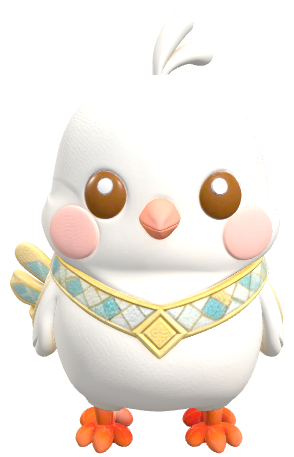
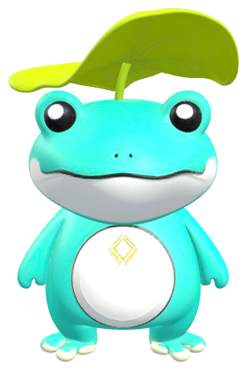

让世界听懂海南Let the world hear Hainan
多语之声Voices in Many Languages
让世界听懂海南，先从听懂「你好」开始。主题曲、双 IP 欢迎语、8 种语言问候与故事旁白——全部由 AI 生成，多语种、多声线，让文化出海自带声音。To make the world hear Hainan, start with a "hello". Theme song, IP welcomes, 8-language greetings and story narration — all AI-made, multilingual and multi-voiced, so culture sets sail with its own sound.
主题曲《甘米米之歌》Theme Song "Song of Ganmimi"



AI 原创主题曲 · 中文 / English 双版本AI Theme Song · Chinese / English
甘米米之歌Song of Ganmimi
甘米米 × 呱噜噜 · 东方初芯Ganmimi × Gualulu · Dongfang Chuxin
播放主题曲Play Theme
0:00
0:00